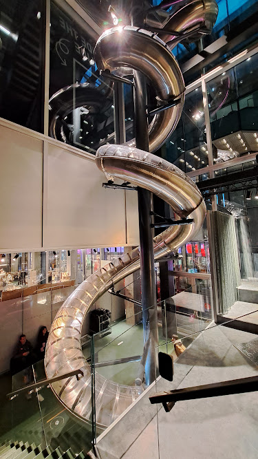
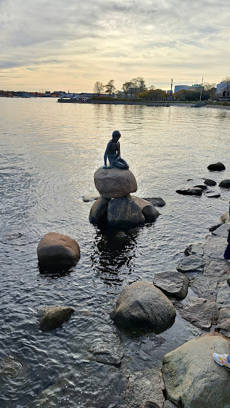

Copenhagen, Denmark üá©üá∞
Autumn City Break in Copenhagen
Where I live In Germany kids have a one-week-break in autumn so in 2024 we decided to plan a short family city break and spend Halloween in Copenhagen. We had 3 full days in the city and here I will share our itinerary and highlights, plus extra tips for the ones who have more time available.
Halloween at Tivoli Gardens
Our first day there was the 31st of October and there is no better place to spend Halloween in Copenhagen then in Tivoli Gardens. This is a mix of amusement park and decorated garden with also lots of options of places to eat, drink and shop. It gets magically decorated for Halloween as you can see on the pictures below. Huge sculpted Pumpkins weighing more than a ton are in display. Every path and alley are completed decorated, there are stores selling only Halloween decorations and everything gets even more magical at night when the sun sets and the lights go on. It is a true spectacle that will for sure awaken the child inside anyone and make their eyes pop out and hearts warm up.
The park looks even more beautiful at nightThere are also many thrilling rides such as roller coasters and others that our son could not join (being under 1,40m) but some were open for kids over 1,20m and although the lines were long we went many times. We got the ride pass which is totally worth it if you are planning to go on 5 or more rides, as with this you pay one price and ride as many times as you want. Since we spent the whole day there until late in the evening we could really make the most of it. After you scan your ticket at the entrance you are allowed to go out and come back again - just get a stamp on your hand before leaving to make sure they will let you come back inside.
There is a competition about the heaviest pumpinkThere is also a lake, a stage with shows for the whole family, a labyrinth, games, many food stalls (mostly hot-dog and pizza, quite expensive), others with sweets and hot wine (that one was worth it), plus little shops with all types of cute things (obviously also quite expensive). Some of our favourite rides were the flying chairs and the wooden roller coaster but there are also bump cars and many rides for little children and well as for the adrenalin-seeking ones.
Entrance during the dayThe park has four seasons and it closes sometimes in between them so you should check the info on their website before you go. They are divided into: Spring, Summer, Halloween and Christmas and I am sure the last one must also be very magical and beautiful - I would like to go some day during Christmas time! Since the food there is expensive and not so delicious make sure to pack some snacks and besides that, be ready for staying in line for the most fun attractions, specially on holidays and weekends, but then... Just have fun!
The surprises are everywhere With the ride pass you can ride as many times as you want, day and nightThe colors and charm of Nyhavn
On the next day we headed directly to Nyhavn, the former old-port which is now a famous and live neighbourhood (famous danish author Hans Christensen used to live here) with colourful houses next to the river, offering beautiful views and plenty of restaurants. If in the past sailors used to walk down these alleys, now you can see and hear tourists from all over the globe. But the atmosphere was very relaxed and it was not too crowded when we came, on that Friday november morning. It was windy but not too cold, cloudy but not raining, so we could really enjoy our time just strolling by the river, admiring the houses and little boats, taking pictures… We didn’t eat here, but on a little restaurant a little far from the main area, which was delicious by the way but I didn’t write down the name of it (shame!) But there are really a lot of options of places to eat in the area which look delicious - it goes without saying that you should not expect to find anything cheap though.
 The colorfoul houses are one of the main sights in the city
You will find plenty of restaurants along the river
A pause to contemplate
The colorfoul houses are one of the main sights in the city
You will find plenty of restaurants along the river
A pause to contemplate
After lunch and some stops to look for souvenirs (literally the most expensive fridge magnet I ever bought or saw in my life but ok üòÇ) we checked Google Maps and saw it was doable to walk from here all the way to Chiristiania. So although it was a bit tiring for my son we actually managed and got there, which was a good decision because of the impact of seeing how everything suddenly changes and you seem to enter into a different world as soon as you cross the entrance sign of "Freetown Christiania".
Freetown Chrisitania, an alternative world
Christiania was founded in 1971 when a group of people cut a hole in the fence to the military barracks in Bådmandsgade. Soon, the area was known for Pusher Street, where you could buy hash and pot – but no hard drugs – from various stalls.Christiania existed under special conditions for 40 years, with constant conflicts and clashes between the local Christianites and the Danish state. After many years of uncertainty about the future of Christiania, an agreement was entered in 2011, which meant that on 1 July 2012, a foundation, the Foundation Freetown Christiania, was founded. You can find more details about the history and controversy around this town here.

Although online you might read that the area might be “dangerous” and a place full of “drug dealers” we had no concerns and felt really safe all the time walking there. It has a very alternative feeling to it but you see kids and there was a little playground where our son had some fun. It also started to rain very hard at one point and we hid under the wooden house in the playground until it became lighter. We only had one umbrella for three people so that was quite an adventure.
The entrance of the Freetown Christiania, does not look like you're in the middle of CopenhagenIf you are not open mindend about certain subjects like weed and light drugs you might not want to come here as we saw many people smoking, but as I said, the place has a very peaceful vibe, almost like a hippie village, which is even more interesting because it is right in the middle of a city so “posh” like Copenhagen (in a good way). There is also a very nice indoor skate park, some little restaurants, some stalls selling handcrafts, and lots of very cool graffitis. To me it was one of the most interesting places of the entire trip but it is up to you to decide if it is attractive to you and your travel companions. Our son enjoyed but apart from the little playground it has nothing specifically made towards kids. The good thing is that there are no cars and the little ones can run freely all around. Besides, as everywhere else we went in Copenhagen, we found the people very friendly and super nice with kids.
DAC, the Danish Architecture Center: fun for all ages
Our next and last stop of the day was the DAC - Danish Architecture Center. I chose this museum because it seemed interesting both for adults as for kids. It did not disappoint. It has several floors with permanent and temporary exhibitions. The biggest attraction for kids is the very tall, long and fast slide that goes all day from the top floor to the lowest one. Our son went up and down so many times - great way to make sure kids spend all that crazy energy they have. Be careful though if you’re an adult because I hit my leg on top of the slide and it was very painful, make sure you stretch your body all the way down. The stairs are colourful and everything inside catches the eye. On the top floor there is a room only for kids with things to play and build their own “architect projects” with Lego and other games as well, even a place with some costumes to try on and play theatre. We just relaxed on the comfortable seats overlooking the city - it has a very nice view too, while our son explored. We liked so much that we stayed util it closed, and it was already night at this time of the year, but if you come earlier or in summer, there is a very cool playground outside as well - which you can use even if you don’t buy a ticket for the museum.
There are many other museums that are interesting for kids, one that I heard very good things about is the Experimentarium, which unfortunately we didn’t”t have time to visit as we also prioritised other things. But I would recommend to take a look at their website if you are travelling to Copenhagen with kids and decide if you want to add it to your trip.
To get to DAC we crossed the Circle Bridge which offers great views of the city, such as the one in the pictureAccomodation, transport and language
It was already dark but we still made a stop to have some hot-dogs in the city center and take a walk on the streets around the central station, København H, before taking the metro back to our Hotel. We stayed at A&O Hostel in Sydhavn - they have another location in Nørrebro. The reason for booking there was mostly that it was very budget-friendly compared to other option in Copenhagen (even more because we had a voucher) and they offer family rooms. Breakfast was pretty good, there was a small climbing wall and other little things for kids to have fun, like some toys and a chess game with human-sized pieces. The room was comfortable and there was only a few inconveniences (like the fire alarm sounding twice by accident, very early in the morning and taking two hours until someone shut it down) and it being a bit far away from the main attractions, but for the price it was worth it. Besides, public transportation worked perfectly and it was very easy to move around.
Play area in the hotel: we booked a budget- & kids-friendly placeThe metro station was just a few steps from the hotel and from there we could get anywhere in about 20 minutes. Danish is a pretty hard language but everybody we met and asked for directions spoke perfect english, also in the train/ metro the announcements are made both in English and Danish. There were two small supermarkets close to the hotel and we went there often to buy snacks, water, etc. People there also spoke english. So language really should not be a problem on your trip to Copenhagen. Of course I could not pronounce the names of places we went or the typical food, but well, that is another story üòÇ
On the subject of transportation we found it was really easy to move around using the metro. With only google maps you should be able to get by and as mentioned we at some point had to ask people on the street for some help - but they were all helpful and fluent in English. I checked all info on this website before going and it was very helpful. Depending on how many times a day you plan to travel with the metro, train or bus it might be worth to buy a Day Pass of 24, 48 or 72 hours. Anyways it is advisable to download the DOT App even if you only want to buy single tickets so you do not have to stop at machines before embarking and possibly having to wait in line. Specially when leaving the airport (we arrived late at night) it was very useful to have the App and just activate our ticket on the phone without having to stop on the lines in front of the ticket machines.
Train Station at night - transport was easy, efficient and we always felt very safeLittle Mermaid and Hygge... Saying goodbye!
On the last day we went to see the famous Little Mermaid - without big expectations, since I had already heard the statue was quite small and not so impressive. But I wanted to go anyways or I would feel like I hadn't really been in Copenhagen. The nice surprise was the park with windmills that we found very close to the river where the Little Mermaid is. According to Google Maps this place is called Kastellet. The day was very sunny, we got off the metro and started walking in the direction of the statue but saw this park on the right side and went inside. It was quiet, beautiful, with a star shaped island which you can access by a bridge and grea for taking some fotos with the wind mills or just enjoying some peace and quiet.
Windmills and cannons on Kastellet, close to the Little Mermaid MonumentAfter a picnic and a nice walk we headed to the actual statue of the Mermaid which was - as expected - not impressive but still nice to see for what it represents as a symbol of the city. It was very crowded around the statue and we didn't stay long but rather took a walk around the river and walked back to the metro station. We then went to have some food and met a friend, then enjoyed the rest of the sunny day on a playground with our son. By the way if you are travelling with kids they will not get bothered as there are many playgrounds all over the city, all of them very clean, free and with nice things to keep kids all ages entertained.
 The Statue of The Little Mermaid was inspired by Hans Christian Andersen’s famous fairy tale. In "real life" it is quite small but tons of tourists gather in crowds to see it every day.